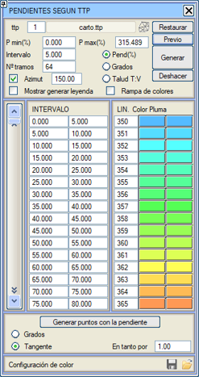
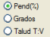
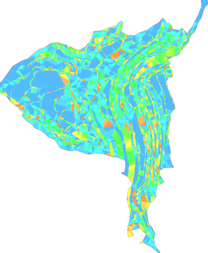
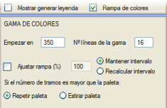
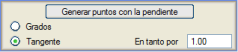

| |
|
SAM'A (TTP) GÖRE EĞİM
|
Bu menü, SAM'a Göre Renklendirme menüsüne benzer, ancak kapalı alanlar, yüzde, altmışlık derece cinsinden ölçülebilen veya şev'den (bu son durumda sıralama her zaman yatay şevden başlayarak azalan değerlerdedir. Aralık sayısı sabitlenebilir, ancak aralık sabitlenemez) yola çıkarak eğim aralıklarına göre oluşturulur. Kapalı alanların kenarları gerçek kotta oluşturulur. 
Öncelikle, eğime göre bir renk haritası oluşturma işlemine devam etmek için bir üçgenlemeden (.ttp) gelen dosyayı yüklememiz gerekecektir. Bunun için, üçgenlenmiş yüzeylerin kontrolü ile ilgili iletişim kutusunu gösterecek olan  simgesinden yardım alabiliriz. simgesinden yardım alabiliriz.Yüklendikten sonra, program yüklenen üçgenlemeye bağlı olarak minimum ve maksimum eğim aralığını otomatik olarak algılayacaktır. Eğim analizini yüzde, Derece veya Şev Y:D değerleriyle yapabiliriz. İhtiyacımıza göre, nihai çizimi yapmak için eğim aralığı için bir değer veya bir aralık sayısı tanımlayacağız. Eğim aralıklarını manuel olarak düzenlemeye izin verilir. Eğer Azimut kutucuğunu etkinleştirirsek, eğimlerin değerlendirileceği belirli bir yön tanımlanabilir. Önizleme komutuyla otomatik bir önizleme yaparız ve Oluştur komutuyla, daha sonra bir harita dosyası olarak kaydedebilmek için haritamızdaki eğime bağlı olarak tanımlanan farklı çizgi stillerini ekranda çizeriz. Çizim oluşturulduktan sonra, Geri Al komutuyla ekranda çizilen çizgileri silebiliriz. Lejant oluşturmayı göster kutucuğunu etkinleştirerek bir lejant gösterebiliriz. Oluştur komutuyla çizimimize aralıkların tanımını içeren bir lejant başlığı ekleyebiliriz. Renk Rampası komutundan, aralıklara sırayla atanacak olan paletin başlangıç rengini belirleyebiliriz.  Eğim ile Nokta Oluştur komutu, her üçgenin merkezinde, eğim yönünde ve kotu (boyutu) eğim değeriyle birlikte, eş eğim haritası oluşturma aracıyla oluşturulanlara benzer şekilde bir nokta oluşturmayı sağlar. 
Son olarak, bu menünün alt kısmında aralıklarla ilişkili bilgileri yüklemeye ve kaydetmeye izin verilir. |